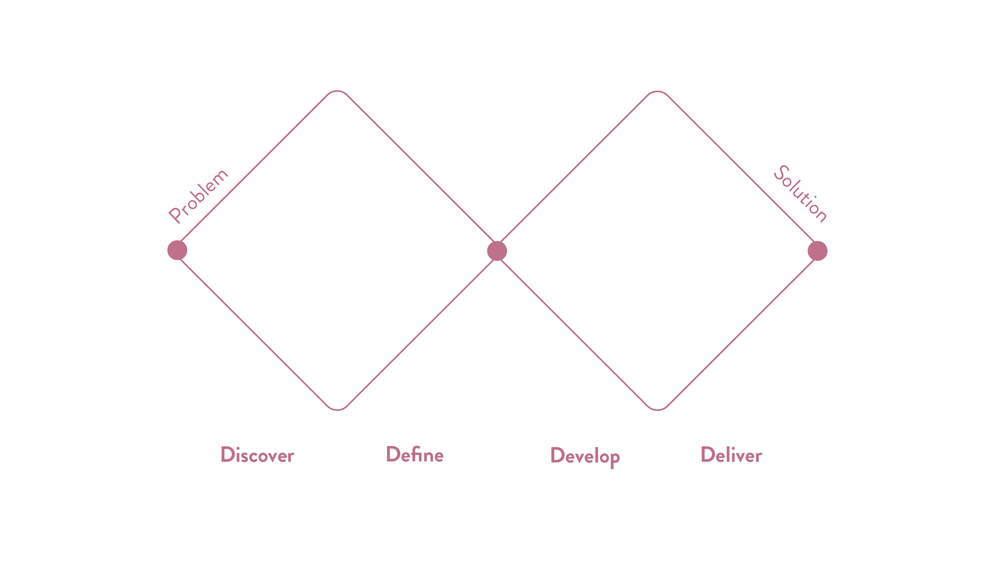
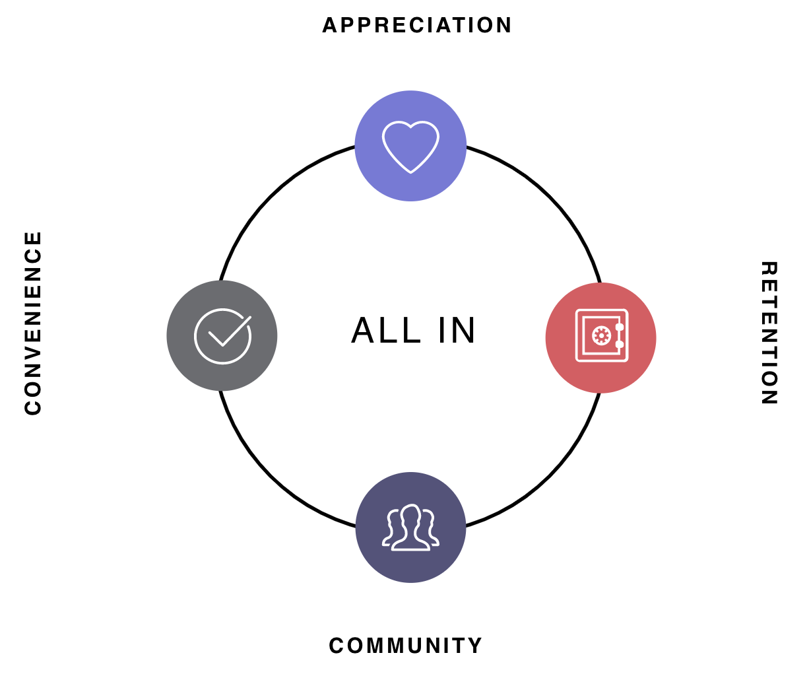
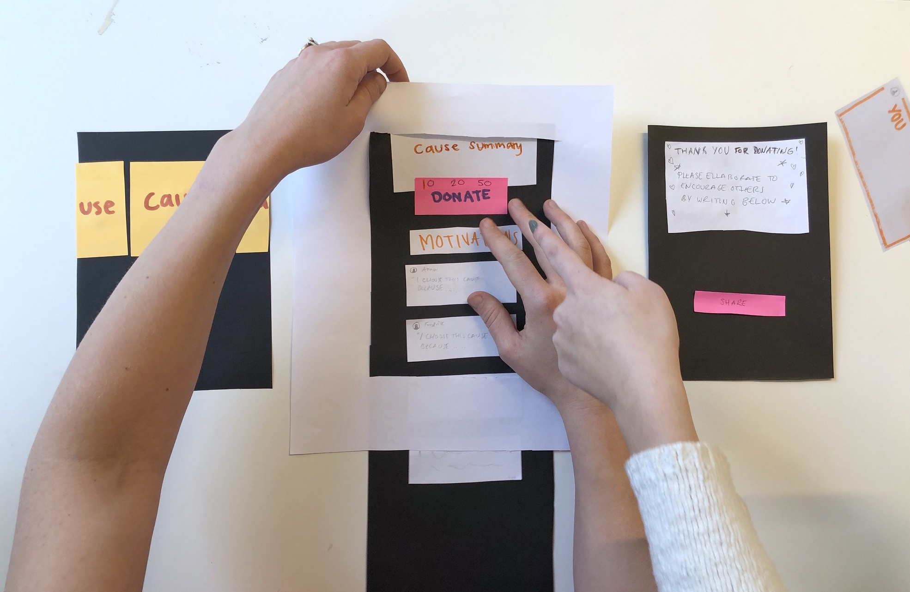
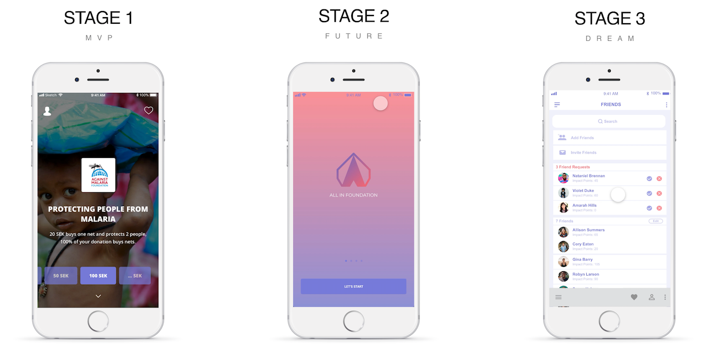

Background
All In Foundation is a social impact tech start up and digital non- profit foundation developing a new way of fundraising to fight extreme poverty.
The overarching objective in the brief was to deliver a top-class app that is easy to use and that attracts a high number of recurrent users. More specifically, the project has succeeded if it receives positive feedback from test users.
The Process
To explore the objective of the brief and to structure our creative process and improve our way of working to come up with a solution, we chose the design process model Double Diamond. We started with understanding the why and defining the how, explored the possible solutions, created one and tested it.
Gathering Insights
One main motivation behind donating is the social aspect. The social aspect can be that the donation matters to someone or something they know and care about, to feel good about oneself or looking good to others and by being influenced by friends and family.
Based on research on the target group, understanding the motivation on donation combined with social media, it became clear that community, personalisation and gamification were three cornerstones to build a concept around.
Ideation
After gathering insights we moved on to using different methods and tools to come up with ideas, ideas and again ideas.
To decide on ideas to further develop we used a 2x2 decision matrix with the factors feasibility and engagement. The ideas with the highest result on the axis were chosen to develop further.
Conceptualising
Me and my team came up with a plan presented in three phases: minimal viable product, near future and dream within the timeframe of tomorrow, in the coming months and in a year.
Each phase with features from the ideation phase to add in the app.
User Flows
To get a better understanding of the target audience, with the purpose of acquisition, I explored motivations, needs, hesitations and what can be gained for different individuals to use the app. By creating different user personas and user stories I could identify user pain points and come up with features in the app to try to solve those.
Prototyping
I created the concept and visualisation of the dream phase to be implemented in a year. The main focus is on community, tapping into the social aspect, and gamification, utilising the positive effects of game elements, with two respective features. Both with the intention to help each other to fight extreme poverty. Giving the user the ability to:
- Add friends, share comments or insights in a feed and customise the user’s homepage.
- Achieve and collect badges based on their interaction.
User Testing
I conducted user testing with several prototypes, both low fidelity versions as well as digital, throughout the process. Observing the user’s interactions with the prototypes gave valuable insight on users understanding and expectations, functionality of the product and actual user flows.
It was my intention to find out what was important to the user, what would give them the confidence to continue and what barriers that would make the user quit their interaction in the app. My overall goal was to figure out how to offer an experience as positive and smooth as possible.
Result
A roadmap for the app development and wireframes for all the different phases and functions.
What was successful? The client appreciated our work and could see the concept be implemented with some tweaks in the design and phases. The teamwork worked great due to our trust in each other. Frequent communication and giving support throughout the process made it possible for creative and diligent flow.
What could’ve been done differently? If I had focused more on the MVP, I would have been able to deliver a ready-to-code concept to the client. As a team I think we could have streamlined our design over the phases to correlate better with each other.